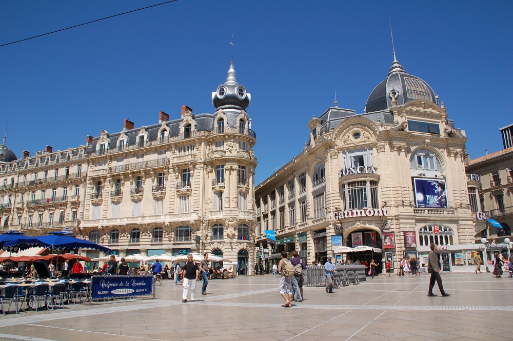
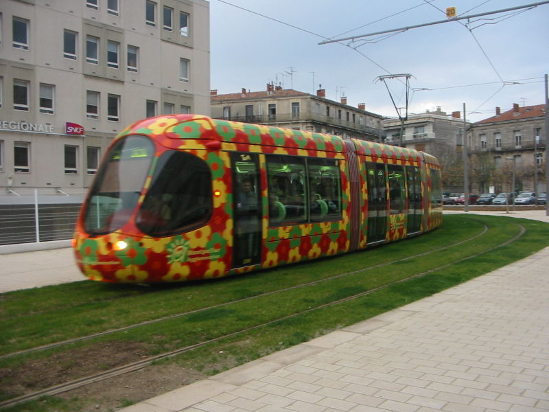
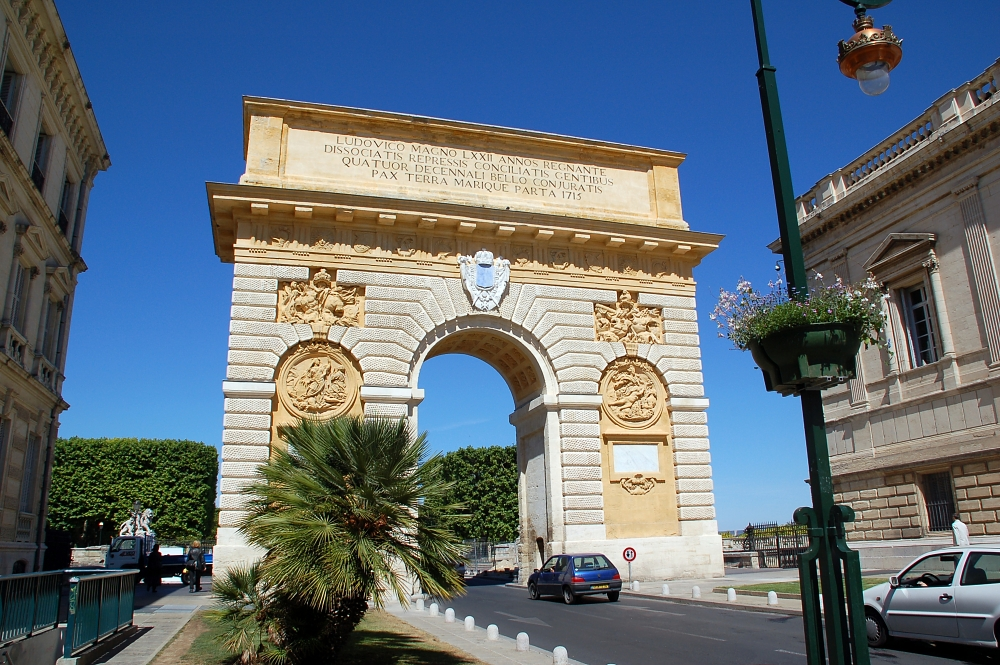
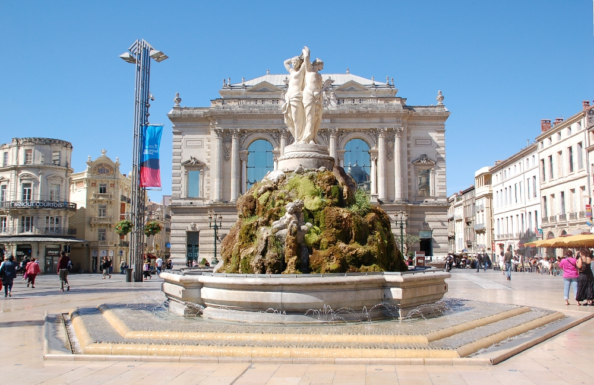

OWL: Experiences and Directions 2013
   
[ Home | Dates | Submissions | Venue | Registration | Organization ] |
The aim of the OWL: Experiences and Directions Workshop (OWLED) is to establish an international forum for the OWL community, where practitioners in industry and academia, tool developers and others interested in OWL can describe real and potential applications, share experience and discuss requirements for language extensions/modifications. OWL is quickly becoming the representational model of choice for expressing semantics of BigData in many industries. This has been made possible thanks to the newly introduced support for tractable OWL fragments that allow inference at large scales over rapidly evolving data. OWLED will be celebrating its 10th year edition which provides an opportunity for an event focused on OWL in retrospective, OWL’s evolution, and future directions in a BigData world.
This year, OWLED will be co-located with ESWC 2013 in Montpellier, France. As usual, the workshop will try to encourage participants to work together and will give space for discussions of various topics as well as having presentation of submissions.
Topics
Papers about all aspects of OWL and extensions, applications, theory, methods and tools, are welcome. Topics of interest include, but are not limited to,
- Application driven requirements for OWL
- Applications of OWL
- Experience of using OWL, in particular the OWL 2 Profiles
- OWL and OBO issues and tools.
- Evaluation of OWL tools e.g. reasoners
- Benchmarks for OWL tools
- Performance and scalability issues and improvements
- Extensions to OWL
- OWL and Rules
- Implementation techniques and experience reports
- Non-standard reasoning service (implementation and requirements for)
- Explanation
- Ontology comprehension
- Tools, including editors, visualisation, parsers and syntax checkers
- Collaborative editing of ontologies
- Versioning of OWL ontologies
- Modularity
- Query answering with OWL
- SPARQL and OWL
- Linked Data and OWL
Important Dates
| Titles and Abstracts due: | 28th February |
| Submissions due: | 4th March |
| Acceptance Notifications: | 1st April |
| Final papers due: | 15th April |
| OWLED Workshop: | 26th - 27th May |
Submissions
This year we would like to invite submissions of the following sorts:
Technical papers (maximum 12 pages LNCS style).These papers should present research, implementation experience, and reports on the above topics and related topics. Space will be reserved for authors to present their work at the workshop.
Short papers or System descriptions (maximum 4-6 pages LNCS style). Short papers and System Descriptions (maximum 4-6 pages LNCS style). These papers should present work that is in an early stage and/or publicize (novel) implemented systems that are of interest to OWLED attendees. We encourage authors of system descriptions to also submit a demonstration paper.
Demonstrations (2 pages LNCS style).These papers should describe a demonstration of a system. The description should highlight why the system/service is of interest to the OWL community and should clearly state what will be demonstrated during the session.
All submissions must be made online using the EasyChair Conference System. More information regarding the LNCS templates for LaTeX is available at the Springer Web site.
Venue
The workshop will be co-located with ESWC 2013 in Montpellier, France..Registration
Registration is via the ESWC registration website.Organization
General Chairs:
Mariano Rodriguez Muro, Free University of Bozen-Bolzano (Italy)
Programme Chair:
Kavitha Srinivas, IBM T.J Watson Research Centre (USA)
Simon Jupp, European Bioinformatics Institute (UK)
Program Committee:
Steering Committee:
- Kendall Clark, Clark & Parsia (USA)
- Melanie Courtot, Terry Fox Laboratory (CA)
- Michel Dumontier, Carleton University (CA)
- Uli Sattler, University of Manchester (UK)
- Michael Schneider, FZI Research Center for Information Technology (DE)